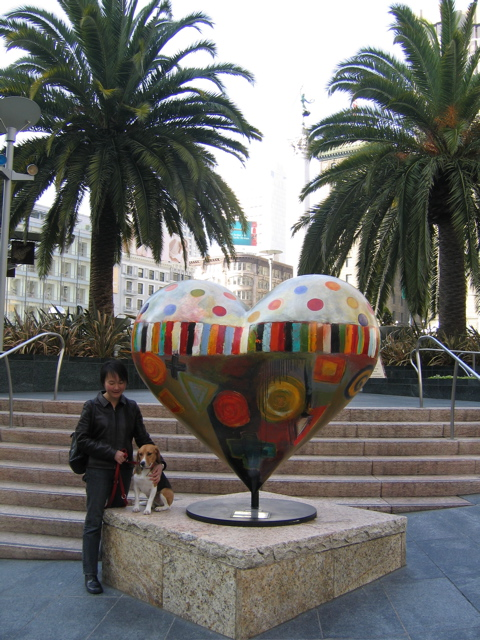

<--Previous Up Next-->

Rainbow Heart
These hearts blanketed the city two summers ago. Tony Bennett's heart has been at the northwest corner of Union Square since then. This Valentine's Day three more appeared at the other three corners. Huxley was delighted to find more examples of his favorite organ to pose with.